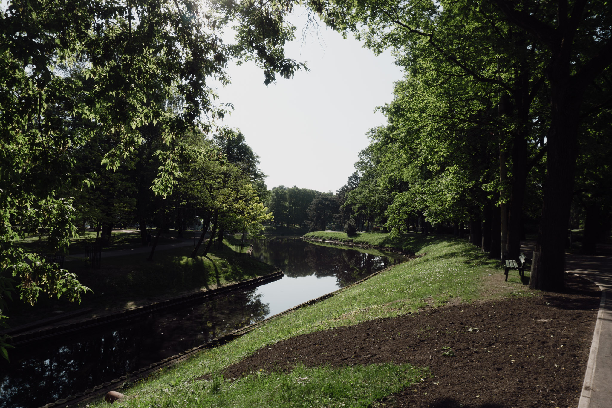
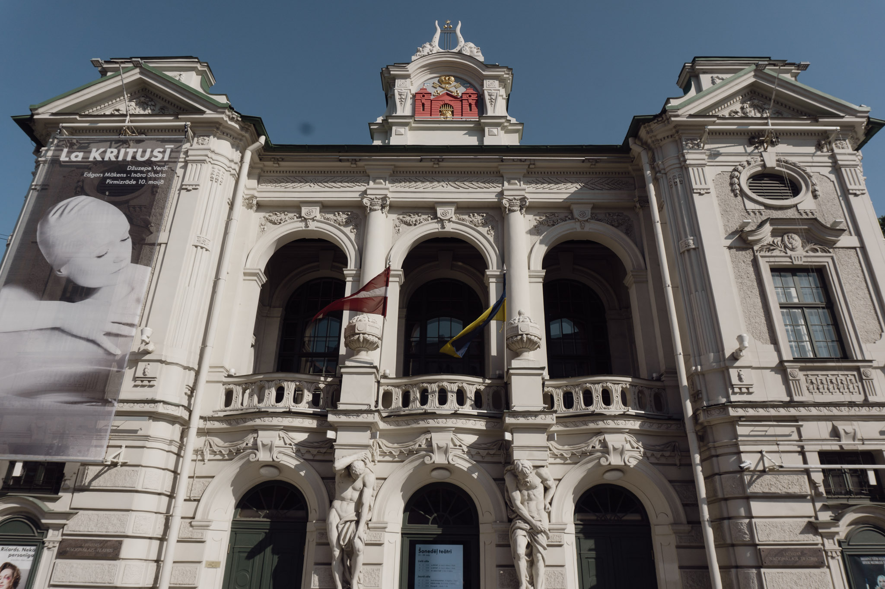
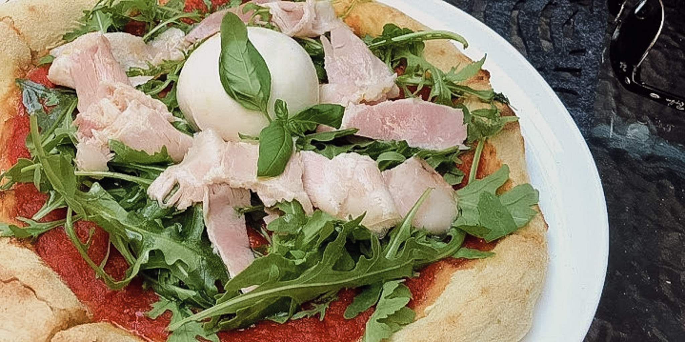

University is not just a bus stop
For me, the University of Latvia is not just a destination or simply a bus stop on my daily way to school; on the contrary - it is like a dynamic center of knowledge, a culmination of technology, exploration and learning. Every day, as I enter this historic building, I feel a deep sense of purpose, an inescapable pull towards enlightenment and knowledge. Here I get a fantastic and immersive learning experience that helps me and every student prepare for life outside of academia. This place not only marks the end of my morning walk, but also marks the beginning of a new discovery, a new friendship, and a new endeavor. Why the University of Latvia? Because I have faith in academic excellence and a strong teaching team. The university offers research opportunities and a favorable environment that helps me to learn in this field. LU is not just a destination, for me it is the beginning of my future life, so that I can take big steps in my career based on the basic knowledge I learn here. It is a place where everyone can improve themselves with knowledge that will fill the empty libraries of our minds.
My everyday routine
Every morning, I leave my residence, which is located in the quiet center, waiting to see what will happen on this magical day. The crisp morning air (could be fresher), the melodious chirping of birds and the soft sunlight casting a golden hue on the streets form the backdrop to my daily ritual. I step into bustling Riga, putting on the shoes not only of a student, but also of an explorer, observer and urban adventurer. The sounds, sights and smells of the city become the unsung symphony of my daily journey. My little husky also supports this as the first hours of the morning are spent together, often going to the nearest dog park. It gives me strength and energy to move on through the day. But with this in mind, I'll always know I have something to come back to after a long day at school. When I take my first steps to LU, I meet the residents who live next to me, who, just like me, go about their daily challenges. I am aware that I am not the only one who enjoys the beauty that surrounds us. To leave!

Image: My husky girl - Maya enjoying a fresh morning, looking at the liveliness outside the window - in the city of Riga.
Neverending beauty of parks
Riga's parks are the green gates that lead me through the city. The hospitable dog owners of the Kronvalda parks, from the serviced rustle of leaves in Bastejkaln, the peaceful aura of the Opera parks; they are my green oasis in the middle of the chaos of the city. They are my sanctuaries, where the sounds of the city give way to the harmony of nature, where concrete fades into picturesque landscapes. Realizing that the people of Riga enjoyed the same things I did in the parks 100 years ago, making me appreciate this beauty, how to preserve it. Each park has its own unique appeal, playing a vital role in my daily commute to school, breathing life into my walks around town, and reminding me of nature's constant charm in our fast-paced lives. It should be remembered that Rīga's parks, whose beginnings can be traced back for centuries, have witnessed the city's transformations and reflect Rīga's cultural heritage. The calm charm of the Esplanade is also captivating with the full beauty of nature, architectural monuments - it is a part of the identity of the center of Riga. There will always be children, young people, parents, families, staff and many different people going around the many paths of the park.


Image: Kronvalda Park, which never ceases to amaze with its all-season peace and beauty.
Architecture
Riga, a city rich in architectural pearls, offers everyone a charming journey into the past. The grandeur of the Faculty of Biology building and the charm of the academic building, the classic design of the Riga State 2nd Gymnasium, which would not be worse than the Riga State 1st Gymnasium, and the elegance of the "Rīdze" school fascinate me every day. The architectural landscape of the city is a fascinating mix of different eras and styles, each building, bridge, road tells its own time and history. This living museum of architectural brilliance not only beautifies my daily route to Raina boulevard, but also instills a sense of awe and respect for the city's heritage and Latvianness. Historical buildings in my heart are never compatible with modern and monochromatic buildings. They are and will remain in my heart. It should be mentioned that the National Theater has a significant historical and cultural significance as the first professional Latvian theater institution - it is a symbol of the country's cultural identity and the emergence of national consciousness. Externally, this theater building stands out for its Neo-Renaissance style, with ornate facades, serge details that exude elegance and grandeur. Magnificently beautiful.


Image: The historic building of the National Theater, where various performances have been held for several decades.
What about coffee?
The coffee shops that are right next to my ikriti road offer a glimpse into the city's vibrant social life. Places such as the Bastejkalns lodge cafe and the Gascony cadets, filled with deep conversations, laughter and the rich aroma of freshly brewed coffee, give me a lively sense of the spirit of Riga. Especially when coffee drinkers can be seen happily sitting at the tables outside surrounded by the sun's rays. They are meeting places for students, tourists, and local residents, each of whom contributes to the dynamic cafe culture of Riga. While restaurant chains like McDonald's exist side by side, local coffee shops literally steal the show in my view with their unique charm, contributing to the city's warm, inviting atmosphere. In addition, cafes add charm and character to the city landscape, improve the overall atmosphere, and most importantly - create a sense of community. Here, people can get to know each other and have deep conversations while being envious of Riga's charming parks and ancient trees. The availability of cafes on this road to the University of Latvia encourages people to get to know and explore the environment that surrounds them. And who knows, maybe our paths will lead to a common goal in this way - to study at LU?

Image: What is the center of the capital without fantastically delicious meals and coffee?